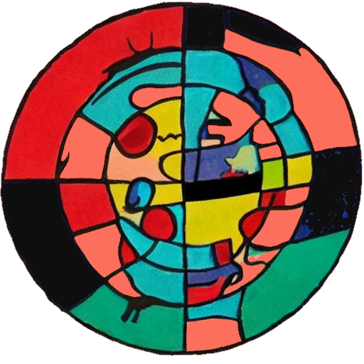

class: center, middle, inverse, title-slide .title[ # Interactive Visualisations ] .subtitle[ ## Annibale Cois, MEng, MPH, PhD ] .author[ ### <span style="font-size: 80%;">Burden of Disease Research Unit, South African Medical Research Council & <br/> School of Public Health, University of Cape Town<br/><br/>Email: <a href="mailto:annibale.cois@mrc.ac.za" class="email">annibale.cois@mrc.ac.za</a><br/>ORCID: <a href="https://orcid.org/0000-0002-7014-6510">0000-0002-7014-6510</a><br/>Web of Science: <a href="https://www.webofscience.com/wos/author/rid/AAK-8603-2020">AAK-8603-2020</a><br/><br/><br/></img><br/> <a href="https://annibalecois.github.io">https://annibalecois.github.io</a></span> ] .date[ ### <span style="color: #A88B53; position: relative; top: 150px;"></span> ] --- class: hide_logo background-image: url("images/thinking.png"),url("images/typing.png") background-position: 10% 27%, 10% 80% background-size: 15%,20% <div> <style type="text/css">.xaringan-extra-logo { width: 150px; height: 46px; z-index: 0; background-image: url(assets/sulogo_1.png); background-size: contain; background-repeat: no-repeat; position: absolute; bottom:1em;left:60px; } </style> <script>(function () { let tries = 0 function addLogo () { if (typeof slideshow === 'undefined') { tries += 1 if (tries < 10) { setTimeout(addLogo, 100) } } else { document.querySelectorAll('.remark-slide-content:not(.title-slide):not(.inverse):not(.hide_logo)') .forEach(function (slide) { const logo = document.createElement('div') logo.classList = 'xaringan-extra-logo' logo.href = null slide.appendChild(logo) }) } } document.addEventListener('DOMContentLoaded', addLogo) })()</script> </div> ## Outline <svg viewBox="0 0 512 512" style="height:1em;display:inline-block;fill:#000000;position:fixed;top:38;right:50;" xmlns="http://www.w3.org/2000/svg"> <path d="M80 368H16a16 16 0 0 0-16 16v64a16 16 0 0 0 16 16h64a16 16 0 0 0 16-16v-64a16 16 0 0 0-16-16zm0-320H16A16 16 0 0 0 0 64v64a16 16 0 0 0 16 16h64a16 16 0 0 0 16-16V64a16 16 0 0 0-16-16zm0 160H16a16 16 0 0 0-16 16v64a16 16 0 0 0 16 16h64a16 16 0 0 0 16-16v-64a16 16 0 0 0-16-16zm416 176H176a16 16 0 0 0-16 16v32a16 16 0 0 0 16 16h320a16 16 0 0 0 16-16v-32a16 16 0 0 0-16-16zm0-320H176a16 16 0 0 0-16 16v32a16 16 0 0 0 16 16h320a16 16 0 0 0 16-16V80a16 16 0 0 0-16-16zm0 160H176a16 16 0 0 0-16 16v32a16 16 0 0 0 16 16h320a16 16 0 0 0 16-16v-32a16 16 0 0 0-16-16z"></path></svg> -- .content-box-shift1[ - ### What is an “interactive visualisation"? - ### Why adding interactivity to data visualisations? - ### Interactive visualisations in epidemiology ] -- .content-box-shift2[ - ### Building interactive visualisations - ### Interactive visualisations in R with *Shiny* ] ??? What is a IV, its defining characteristics and elements Building interactive visualisations: what do we need (a 'high level' overview) --- ## What is an “interactive visualisation”? <svg viewBox="0 0 384 512" style="height:1em;display:inline-block;fill:#000000;position:fixed;top:38;right:50;" xmlns="http://www.w3.org/2000/svg"> <path d="M202.021 0C122.202 0 70.503 32.703 29.914 91.026c-7.363 10.58-5.093 25.086 5.178 32.874l43.138 32.709c10.373 7.865 25.132 6.026 33.253-4.148 25.049-31.381 43.63-49.449 82.757-49.449 30.764 0 68.816 19.799 68.816 49.631 0 22.552-18.617 34.134-48.993 51.164-35.423 19.86-82.299 44.576-82.299 106.405V320c0 13.255 10.745 24 24 24h72.471c13.255 0 24-10.745 24-24v-5.773c0-42.86 125.268-44.645 125.268-160.627C377.504 66.256 286.902 0 202.021 0zM192 373.459c-38.196 0-69.271 31.075-69.271 69.271 0 38.195 31.075 69.27 69.271 69.27s69.271-31.075 69.271-69.271-31.075-69.27-69.271-69.27z"></path></svg> <br/><br/><br/><br/> ##.center[*"a computational tool that store, process and visually represent data to facilitate interactive exploration"*] .right[<cite>Ola and Sedig (2016)</cite>] ??? Key words: 1. **computational tool**: it is not just something we can "look at" (an image). Visual representation (i.e. generating an image) is only one element of an interactive visualisation. An interactive visualisation also needs a way to **store** data (or access dynamically form external sources) and **process** the stored data according to the user inputs (and, often, not only from the user, but from external sources: e.g., to reach to change in the data over time). 2. **interactive**: obvious, and interactive visualisation need a way to "interact" with the users, i.e. to respond to their inputs (And, sometimes, suggest further inputs) 3. **facilitate exploration**: the final objectbe of an interactive visualisation is to allow users to get **better insights** on the data, compared to those they can get form a static visualisation (or from no-visualisation). --- class: hide_logo background-image: url("images/data.png"),url("images/gears.gif"),url("images/visual.png"),url("images/arrow_2.png"),url("images/arrow_2.png") background-position: 10% 80%, 25% 40%, 50% 10%,37% 17%,18% 56% background-size: 10%,20%,15%, 6%,6% ??? Users (they can be more than one...) interact with the tool at different points of the visualisation process: they can change the data, the can modify the processing (e.g. use different statistics), and the can modify the visual appearance of the visualisation beyond the data (change fonts, backgrounds, borders...) In other words, they interact with each elements of a visualisation, as defined in the grammar of graphics... -- <img src = "images/links_1.png" style = "width: 50%; position: relative; margin-top: 20%; margin-left: 20%;"></img> <img src = "images/users.png" style = "width: 20%; position: relative; margin-top: -20%; margin-left: 68%;"></img> -- <div style="position:relative; margin-top: -13%; margin-left: 40%; font-size: 100%; background: white; text-align: center; width: 100px;">Data</div> <div style="position:relative; margin-top: -14%; margin-left: 45%; font-size: 100%; background: white; text-align: center; width: 150px;">Aesthetics, geometries, statistics,.....</div> <div style="position:relative; margin-top: -12%; margin-left: 52%; font-size: 100%; background: white; text-align: center; width: 100px;">Theme</div> --- background-image: url("images/bigdata.png") background-position: 50% 60% background-size: 50% ## Why adding *interactivity* to data visualisations? <svg viewBox="0 0 384 512" style="height:1em;display:inline-block;fill:#000000;position:fixed;top:38;right:50;" xmlns="http://www.w3.org/2000/svg"> <path d="M202.021 0C122.202 0 70.503 32.703 29.914 91.026c-7.363 10.58-5.093 25.086 5.178 32.874l43.138 32.709c10.373 7.865 25.132 6.026 33.253-4.148 25.049-31.381 43.63-49.449 82.757-49.449 30.764 0 68.816 19.799 68.816 49.631 0 22.552-18.617 34.134-48.993 51.164-35.423 19.86-82.299 44.576-82.299 106.405V320c0 13.255 10.745 24 24 24h72.471c13.255 0 24-10.745 24-24v-5.773c0-42.86 125.268-44.645 125.268-160.627C377.504 66.256 286.902 0 202.021 0zM192 373.459c-38.196 0-69.271 31.075-69.271 69.271 0 38.195 31.075 69.27 69.271 69.27s69.271-31.075 69.271-69.271-31.075-69.27-69.271-69.27z"></path></svg> --- class: hide_logo background-image: url("images/bigdata1.jpg") background-position: 50% 45% background-size: 70% .footnote[.small[[Cremin CJ et al. Big data: Historic advances and emerging trends in biomedical research (doi: 10.1016/j.crbiot.2022.02.004)](https://doi.org/10.1016/j.crbiot.2022.02.004)]] ??? dynamic data (very rapid change: ~40000 search/second) large quantities different interests (content, geolocation,...) --- background-image: url("images/3-r-animated-cube.gif") background-position: 50% background-size: 50% ## Why adding *interactivity* to data visualisations? <svg viewBox="0 0 384 512" style="height:1em;display:inline-block;fill:#000000;position:fixed;top:38;right:50;" xmlns="http://www.w3.org/2000/svg"> <path d="M202.021 0C122.202 0 70.503 32.703 29.914 91.026c-7.363 10.58-5.093 25.086 5.178 32.874l43.138 32.709c10.373 7.865 25.132 6.026 33.253-4.148 25.049-31.381 43.63-49.449 82.757-49.449 30.764 0 68.816 19.799 68.816 49.631 0 22.552-18.617 34.134-48.993 51.164-35.423 19.86-82.299 44.576-82.299 106.405V320c0 13.255 10.745 24 24 24h72.471c13.255 0 24-10.745 24-24v-5.773c0-42.86 125.268-44.645 125.268-160.627C377.504 66.256 286.902 0 202.021 0zM192 373.459c-38.196 0-69.271 31.075-69.271 69.271 0 38.195 31.075 69.27 69.271 69.27s69.271-31.075 69.271-69.271-31.075-69.27-69.271-69.27z"></path></svg> --- class: hide_logo background-image: url("images/3dcat.png"), url("images/3dnum.png"), url("images/arrow_3.png") background-position: 5% 30%, 90% 30%, 80% 87% background-size: 45%, 45%, 8% <div style = "position: relative; padding-top: 53%; left: 75%; font-size: 80%; "><cite> Luz and Masoodian (2022) </cite></div> .footnote[.large[[https://webtoolkit.eu/widgets/graphics-charts/3d-category-chart](https://webtoolkit.eu/widgets/graphics-charts/3d-category-chart) <br/> [https://webtoolkit.eu/widgets/graphics-charts/3d-numerical-chart](https://webtoolkit.eu/widgets/graphics-charts/3d-numerical-chart)] <br/><br/><br/>] ??? The only way I can really appreciate 3d visualisations (excluding some very simple cases, where patterns are evident...) An example of 3d visualisations in infectious disease epidemiology (which we don't look at together) --- background-image: url("images/insight.png") background-position: 50% 50% background-size: 25% ## Why adding *interactivity* to data visualisations? <svg viewBox="0 0 384 512" style="height:1em;display:inline-block;fill:#000000;position:fixed;top:38;right:50;" xmlns="http://www.w3.org/2000/svg"> <path d="M202.021 0C122.202 0 70.503 32.703 29.914 91.026c-7.363 10.58-5.093 25.086 5.178 32.874l43.138 32.709c10.373 7.865 25.132 6.026 33.253-4.148 25.049-31.381 43.63-49.449 82.757-49.449 30.764 0 68.816 19.799 68.816 49.631 0 22.552-18.617 34.134-48.993 51.164-35.423 19.86-82.299 44.576-82.299 106.405V320c0 13.255 10.745 24 24 24h72.471c13.255 0 24-10.745 24-24v-5.773c0-42.86 125.268-44.645 125.268-160.627C377.504 66.256 286.902 0 202.021 0zM192 373.459c-38.196 0-69.271 31.075-69.271 69.271 0 38.195 31.075 69.27 69.271 69.27s69.271-31.075 69.271-69.271-31.075-69.27-69.271-69.27z"></path></svg> --- class: hide_logo background-image: url("images/perspectives.png") background-position: 50% 50% background-size: 50% ??? Insight: A new way of viewing the world that causes us to reexamine existing conventions and challenge the status quo. --- class: hide_logo background-image: url("images/FacebookGlobalConnections2010.webp") background-position: 50% 50% background-size: 100% 100% .footnote[<br/>.small[[https://successcreeations.com/2908/our-facebook-connected-world/](https://successcreeations.com/2908/our-facebook-connected-world/)]] ??? The articol where this image is reported is about market penetration a, advertising and possibility to exp;and the business.. To me, the images generates ideas regarding potential and limitations of mHealth applications in an unequally interconnected world. --- class: hide_logo background-image: url("images/pubmed.png") background-position: 50% 65% background-size: 60% ## Interactive data visualisations are increasingly used in the health sciences... .footnote[Number of PubMed listed publications including the terms *interactive data visualisation*, by year] --- class: hide_logo background-image: url("images/christie_1.png"),url("images/christie_2.png"), url("images/circle.png"), url("images/results.png") background-position: 50% 25%, 50% 65%, 20% 98%, 80% 82% background-size: 90%, 90%, 10%, 18% ## ... and in Public Health <a href = "https://public.tableau.com/app/profile/jawad.chishtie/viz/InteractiveVisualizationApplicationsinPopulationHealthandHealthServicesResearch-Jan2005toMarch2019/DataSource"><img src = "images/tableau.png" style = "width: 20%; position: relative; margin-top: 43%; margin-left: 73%;"></img></a> .footnote[.scriptsize[<cite>Chishtie, Bielska, Barrera et al. (2022)</cite>]] --- class: hide_logo background-image: url("images/IHME.png") background-position: 50% 30% background-size: 80% .footnote[[https://www.healthdata.org/data-tools-practices/interactive-data-visuals](https://www.healthdata.org/data-tools-practices/interactive-data-visuals)] --- class: hide_logo background-image: url("images/ward.png"), url("images/liere.png"),url("images/mdpi.png") background-position: 10% 50%, 50% 50%, 90% 50% background-size: 25%, 25%, 25% ## Some general references: .footnote[<cite> Ward, Grinstein, and Keim (2010) ; Ebert and Weber (2018) ; Liere, Adriaansen, and Zudilova-Seinstra (2009)</cite> ] --- class: hide_logo background-image: url("images/gcharts.png"), url("images/tableaui.png"),url("images/powerbi.png"),url("images/tableau.png"), url("images/infogram.png"),url("images/rawgraphs.png") background-position: 10% 25%, 50% 25%, 90% 25%, 10% 70%, 50% 70%, 90% 70% background-size: 25%, 25%, 25%, 25%, 25%, 25% ## Building Interactive visualisations: tools .footnote[ [https://www.forbes.com/advisor/business/software/best-data-visualization-tools/](https://www.forbes.com/advisor/business/software/best-data-visualization-tools/)<br/> [https://www.wordstream.com/blog/ws/2016/09/29/data-visualization-tools](https://www.wordstream.com/blog/ws/2016/09/29/data-visualization-tools)</br> [https://www.intellspot.com/open-source-data-visualization/](https://www.intellspot.com/open-source-data-visualization/)<br/> [https://solutionsreview.com/business-intelligence/the-ultimate-list-of-open-source-and-free-data-visualization-tools/](https://solutionsreview.com/business-intelligence/the-ultimate-list-of-open-source-and-free-data-visualization-tools/) ] ??? Many tools, with different characteristics: - web applications - desktop software - libraries - integration with otehr apps - element of data analysistcs - machine learning - free and expensive (subscriptions) - open socurce and commercial --- class: hide_logo background-image: url("images/data.png"),url("images/gears.gif"),url("images/visual.png"),url("images/arrow_2.png"),url("images/arrow_2.png"),url("images/links_1.png"),url("images/users.png") background-position: 10% 90%, 25% 50%, 50% 20%,37% 27%,18% 66%, 50% 71%,85% 71% background-size: 10%,20%,15%, 6%,6%,50%,10% -- <img src = "images/elements.png" style = "width: 100%; position: relative; margin-top: 0%; margin-left: -5%;"></img> ??? All share the same elements (mor or less 'buried' into the system and visible to the users) We a place to store /retrieve the data We need a "tool" to process the data We need an interface to visualise the data We need an interface to allow users to "interact" with the system and modify one or more of tehse emelents (data, processing, visualisation) --- class: hide_logo background-image: url("images/typing.png") background-position: 50% 50% background-size: 50% --- class: hide_logo background-image: url("images/ofg_1.png") background-position: 50% 50% background-size: 60% ## Example 1: the *old faithful geyser* app -- <img src = "images/ofg_2.png" style = "width: 50%; position: relative; margin-top: 10%; margin-left: 25%;"></img> --- class: hide_logo .scroll-output[ ```r library(shiny) ui <- fluidPage( # Application title titlePanel("Old Faithful Geyser Data"), # Sidebar with a slider input for number of bins sidebarLayout( sidebarPanel( sliderInput("bins", "Number of bins:", min = 1, max = 50, value = 30) ), # Show a plot of the generated distribution mainPanel( plotOutput("distPlot") ) ) ) server <- function(input, output) { output$distPlot <- renderPlot({ # generate bins based on input$bins from ui.R x <- faithful[, 2] bins <- seq(min(x), max(x), length.out = input$bins + 1) # draw the histogram with the specified number of bins hist(x, breaks = bins, col = 'darkgray', border = 'white', xlab = 'Waiting time to next eruption (in mins)', main = 'Histogram of waiting times') }) } shinyApp(ui = ui, server = server) ``` ] ??? ui (user interface): visualisation, interactivity (input/output) server: processing Where are the data? in this case are provided by the R environment itself (as the ofg is a standard R dataset) --- class: hide_logo background-image: url("images/banner.png") background-position: 98% 98% background-size: 25% ## Example 2: A dashboard for *Cardiovascular Risk Factors in SA* .footnotesize[ ```r load("data/cvd.RData") head(DATA) ``` ``` year province geotype sex agecat bmi bmicat sbp dbp cvdrisk 1 2017 Western Cape Rural Male 55-59 18.73622 Healthy weight 110.5000 73.00000 11.0800103 2 2008 Northern Cape Urban Male 60-64 23.04328 Healthy weight 155.5000 100.00000 30.1972010 3 2007 Eastern Cape Rural Female 60-64 43.25259 Obesity III 213.0000 94.66666 84.1130210 4 2010 Northern Cape Rural Male 30-34 19.26717 Healthy weight 97.5000 63.50000 0.9863426 5 2017 Limpopo Rural Female 35-39 41.05962 Obesity III 122.5000 97.50000 2.3223061 6 2004 KwaZulu Natal Urban Female 35-39 24.85624 Healthy weight 115.3333 77.66666 1.4508358 ``` ] .pull-left[ ```r nrow(DATA) ``` ``` [1] 10000 ``` ```r unique(DATA$year) ``` ``` [1] 2017 2008 2007 2010 2004 2015 2012 1998 2016 2014 ``` ] --- class: hide_logo background-image: url("images/app.png") background-position: 50% 50% background-size: 90% --- class: hide_logo background-image: url("images/shiny.png"), url("images/ggplot2.png"), url("images/plotly.png"), url("images/shinydash.png"), url("images/arrow_3.png") background-position: 5% 50%,40% 15%, 68% 80%, 95% 20%,10% 90% background-size: 25%,25%,18%,25%,10% .footnote[[https://rstudio.github.io/shinydashboard/index.html](https://rstudio.github.io/shinydashboard/index.html)] --- class: hide_logo ## Setup .center[*Install packages*] ```r install.packages(c("shiny","shinydashboard","ggplot2","plotly")) ``` .center[*Create three files .R*] ```r global.R --> code to be execute when the app starts server.R --> server ui.R --> user interface ``` --- class: hide_logo .center[*global.r*] ```r library(shiny) library(dplyr) library(ggplot2) library(shinydashboard) library(plotly) load("cvd.RDATA") ``` class: hide_logo .center[*ui.r*] ```r dashboardPage( dashboardHeader(), dashboardSidebar(), dashboardBody() ``` .center[*server.r*] ```r function(input, output) { ``` --- class: hide_logo background-image: url("images/rstudio.png") background-position: 50% 50% background-size: 30% .footnote[.large[ <img src = "images/github.png" width = "85"></img> <br/><br/> Code of the example on GitHub (*/code/cvd*): <br/> <a href = "https://github.com/AnnibaleCois/InteractiveVisualisations">https://github.com/AnnibaleCois/InteractiveVisualisations</a> <br/> Direct download links: <a href="code/cvd/global.R" download>global.R</a>, <a href="code/cvd/ui.R" download>ui.R</a>, <a href="code/cvd/server.R" download>server.R</a>, <a href="code/cvd/cvd.RDATA" download>cvd.RDATA</a> ] ] --- class: hide_logo ## User Interface (ui.R) .scroll-output[ ```r dashboardPage( dashboardHeader(title = "Cardiovascular Risk Dashboard"), dashboardSidebar( sliderInput( inputId = "riskThreshold", label = "Risk Threshold", min = 0, max = 50, value = 3, step = 1 ), checkboxGroupInput( inputId = "geotype", label = "Geotype", inline = TRUE, choices = c("Urban","Rural"), selected = c("Urban","Rural") ), checkboxGroupInput( inputId = "sex", label = "Sex", inline = TRUE, choices = unique(DATA$sex), selected = c("Male","Female") ), checkboxGroupInput( inputId = "agecat", label = "Age Groups", inline = TRUE, choices = unique(DATA$agecat), selected = c("50-54") ), radioButtons( inputId = "year", label = "Year", inline = TRUE, choices = unique(DATA$year), selected = 2016 ), sidebarMenu( menuItem("Dashboard", tabName = "dashboard"), menuItem("Raw data", tabName = "rawdata") ) ), dashboardBody( tabItems( tabItem("dashboard", fluidRow( valueBoxOutput("ssize"), valueBoxOutput("cvdrisk"), valueBoxOutput("excessrisk") ), fluidRow( box( width = 8, status = "info", solidHeader = TRUE, title = "Cardiovascular risk, by province", plotlyOutput("riskPlot", width = "100%", height = 600) #plotOutput("riskPlot", width = "100%", height = 600) ), box( width = 4, status = "info", title = "Risk factors, averages", tableOutput("riskTable") ) ) ), tabItem("rawdata", numericInput("maxrows", "Rows to show", 25), verbatimTextOutput("rawtable"), downloadButton("downloadCsv", "Download as CSV") ) ) ) ) ``` ] --- class: hide_logo ## Server (server.R) .scroll-output[ ```r function(input, output) { # Filter data according to inputs data_filtered <- reactive({ subset(DATA, sex %in% input$sex & agecat %in% input$agecat & year %in% input$year & geotype %in% input$geotype) }) # Recalculate outputs every time an input changes # Sampe size rowCount <- reactive({ nrow(data_filtered()) }) output$ssize <- renderValueBox({ valueBox( value = rowCount(), subtitle = "Sample size", icon = icon("database"), color = "aqua" ) }) # Average CVD risk avgRisk <- reactive({ paste(round(mean(data_filtered()$cvdrisk, na.rm = TRUE),1),"%", sep = "") }) output$cvdrisk <- renderValueBox({ valueBox( value = avgRisk() , subtitle = "Average CVD risk", icon = icon("heart-crack"), color = "red" ) }) # Percentage above risk threshold excRisk <- reactive({ paste(round(mean(data_filtered()$cvdrisk > input$riskThreshold, na.rm = TRUE)*100,1),"%", sep = "") }) output$excessrisk <- renderValueBox({ valueBox( excRisk(), "Risk above threshold", icon = icon("percent"), color = "yellow" ) }) # Bar chart with provincial averages output$riskPlot <- renderPlotly({ #output$riskPlot <- renderPlot({ data <- data_filtered() if (nrow(data) == 0) return() data_province <- aggregate(data$cvdrisk, by = list(data$province), FUN = mean) data_province <- rename(data_province, Province = Group.1, cvdrisk = x ) ggplot(data_province) + aes(x = Province, y = cvdrisk, fill = Province) + geom_bar(stat = "identity") + theme(legend.position = "none") }) # Table with average levels of risk factors output$riskTable <- renderTable({ data <- data_filtered() if (nrow(data) == 0) return() data_province <- aggregate(data[,c("bmi","sbp","dbp")], by = list(data$province), FUN = mean) data_province <- rename(data_province, Province = Group.1) data_province }, digits = 1) # Raw data table output$rawtable <- renderPrint({ orig <- options(width = 1000) print(tail(data_filtered(), input$maxrows), row.names = FALSE) options(orig) }) # Download data output$downloadCsv <- downloadHandler( filename = "data.csv", content = function(file) { write.csv(data_filtered(), file) }, contentType = "text/csv" ) } ``` ] --- class: hide_logo background-image: url("images/app.png") background-position: 50% 50% background-size: 90% --- class: hide_logo background-image: url("images/deploy.png") background-position: 50% 60% background-size: 80% ## Deploying your app -- <img src = "images/circle.png" style = "width: 40%; position: relative; margin-top: -2%; margin-left: 0%;"></img> .footnote[.large[https://www.shinyapps.io/]] --- background-image: url("images/deploy_1.png") background-position: 50% 50% background-size: 90% -- <img src = "images/deploy_2.png" style = "width: 60%; position: relative; margin-top: 12%; margin-left: 20%;"></img> --- ```r #install.packages(c("rmarkdown","rsconnect") library(rsconnect) library(rmarkdown) # Set account (Only once) rsconnect::setAccountInfo(name = 'sacra2', token = '<token>', secret = '<secret>') # Deploy new version rsconnect::deployApp('Alcohol', account = "sacra2") ``` -- .content-box-yellow[ .center[ .large[ https://your-account-name.shinyapps.io/your-directory-name ] ] ] -- <br/> .content-box-darkorange[ .center[ .large[ https://sacra2.shinyapps.io/alcohol/ ] ] ] --- class: hide_logo background-image: url("images/reading.png") background-position: 90% 90% background-size: 20% ## References .scriptsize[ Chishtie, J., I. A. Bielska, A. Barrera, et al. (2022). "Interactive Visualization Applications in Population Health and Health Services Research: Systematic Scoping Review". EN. In: _Journal of Medical Internet Research_ 24.2. Company: Journal of Medical Internet Research Distributor: Journal of Medical Internet Research Institution: Journal of Medical Internet Research Label: Journal of Medical Internet Research Publisher: JMIR Publications Inc., Toronto, Canada, p. e27534. DOI: [10.2196/27534](https://doi.org/10.2196%2F27534). URL: [https://www.jmir.org/2022/2/e27534](https://www.jmir.org/2022/2/e27534) (visited on Oct. 31, 2022). Ebert, A. and G. H. Weber, ed. (2018). _Scalable Interactive Visualization_. Eng. MDPI. ISBN: 3-03842-804-3. Liere, R., T. Adriaansen, and E. Zudilova-Seinstra (2009). _Trends in interactive visualization: state-of-the-art survey_. Springer. Luz, S. and M. Masoodian (2022). "Exploring Environmental and Geographical Factors Influencing the Spread of Infectious Diseases with Interactive Maps". In: _Sustainability_ 14.16, p. 9990. Ola, O. and K. Sedig (2016). "Beyond simple charts: Design of visualizations for big health data." Eng. In: _Online J Public Health Inform_ 8.3, p. e195. ISSN: 1947-2579. DOI: [10.5210/ojphi.v8i3.7100](https://doi.org/10.5210%2Fojphi.v8i3.7100). Ward, M. O., G. Grinstein, and D. Keim (2010). _Interactive data visualization: foundations, techniques, and applications_. AK Peters/CRC Press. ] --- class: hide_logo background-image: url("assets/samrc_background.png") background-position: 50% 50% background-size: 100% 100% .font200[ <p style ="font-size:200%; margin-bottom: -10px; margin-left: 200px;">Thank You!</p> ] <br/><br/> <div style = "text-align: right; position: fixed; right: 100px;"> <img src = "images/github.png" width = "85"></img> <br/><br/> The rmarkdown code of this presentation is available on GitHub: <br/> <a href = "https://github.com/AnnibaleCois/InteractiveVisualisations">https://github.com/AnnibaleCois/InteractiveVisualisations</a> </div>